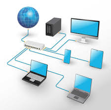

Protecting Networks
Network security focuses on protecting data as it moves between computers and devices. Firewalls, monitoring tools, and secure configurations are used to block unauthorized access and detect suspicious activity.
A secure network helps prevent attackers from reaching sensitive systems and information. It is an important part of both business and personal technology environments.

Source: CISA - Network Security